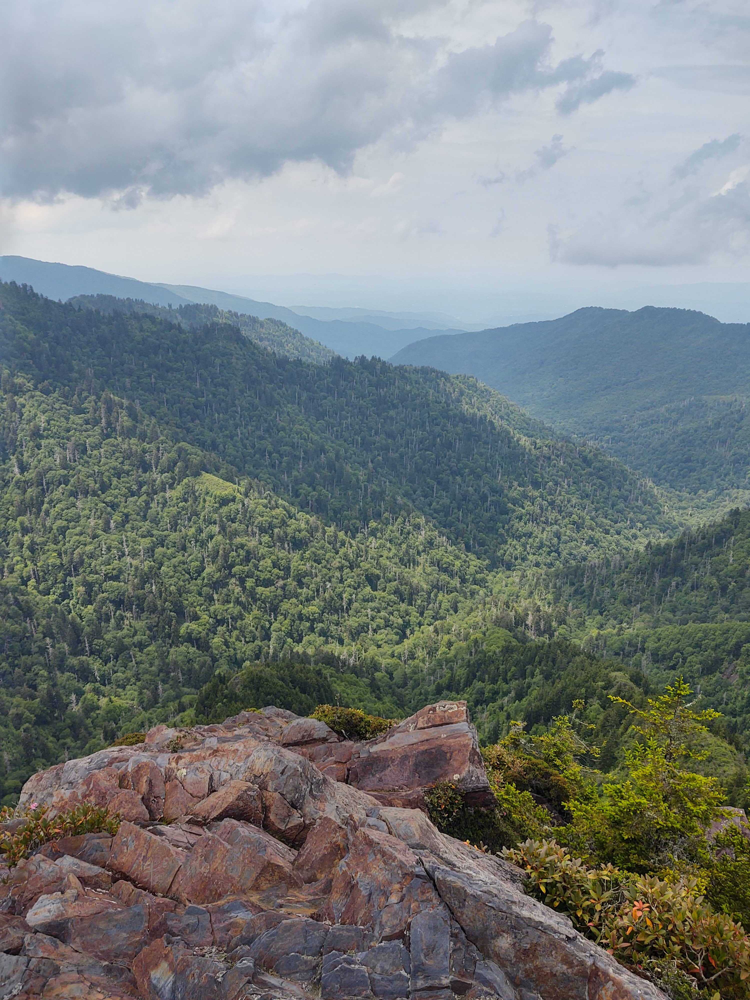

Ada Sedova, PhD
I am a computational and experimental researcher. I work at the interface of physical chemistry, biophysics, bioinformatics, computational chemistry, computing, and chemical physics.
Currently my focus is on high performance computing. My aim is to use the power of large supercomputers to help us attain novel results in many areas of computational science, and to integrate these efforts with experimental data and measurments to help boost prediction and explanation.
Here are some of my other pages:
Oak Ridge National Lab
LinkedIn
ResearchGate
Google Scholar
Here are some fun things to do in East Tennessee:
